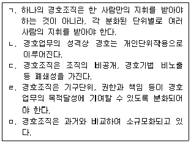
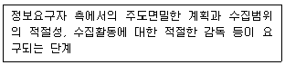
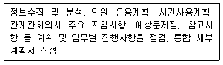
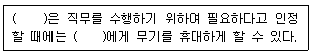
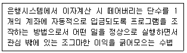

경비지도사-2차(경호학) (2012-11-17 기출문제)
1. 경호의 분류에 관한 설명으로 옳지 않은 것은?
- 현충일, 광복절 행사 등 국경일 행사에 참석하는 대통령에 대한 경호 수준은 1(A)급 경호에 해당한다.
- 공식경호행사를 마치고 귀가 중 환차코스를 변경하여 예정에 없던 행사장에 방문할 때의 경호는 비공식경호이다.
- 행사장 주변에 경호장비 등을 배치하여 인적ㆍ물적ㆍ자연적 위해요소를 통제하는 활동은 간접경호에 해당된다.
- 행사준비 등의 시간적 여유없이 갑자기 결정된 상황하의 경호수준은 2(B)급 경호라고 할 수 있다.
(정답률: 97%)

2. 경호의 원칙에 관한 설명으로 옳지 않은 것은?
- 하나의 통제된 지점을 통한 접근의 원칙이란 경호대상자에 접근할 수 있는 출입구(통로)는 하나만 필요하다는 원칙이다.
- 방어경호의 원칙이란 경호원은 공격자의 제압보다 경호대상자의 방어 및 대피를 우선해야 한다는 원칙이다.
- 자기담당구역 책임의 원칙은 경호원 자신의 담당구역 안에서 발생하는 사태에 대해서 자신이 책임을 지고 해결해야 한다는 원칙이다.
- 은밀경호의 원칙은 경호장비나 경호원이 경호대상자의 눈에 띄지 않게 은밀하게 경호임무를 수행하는 것을 말한다.
(정답률: 87%)
3. 3중 경호의 원칙에 관한 설명으로 옳지 않은 것은?
- 3중 경호는 경호영향권역을 공간적으로 구분하여 해당구역의 위해요소에 대해 상대적으로 차등화된 경호조치와 중첩된 통제를 통하여 경호의 효율화를 기하고자 하는 경호방책이다.
- 3중 경호의 구조는 경호대상자가 위치한 장소로부터 1선(내부), 2선(내곽), 3선(외곽)으로 구분된다.
- 1선은 안전구역으로 경호대상자에게 직접적인 위해를 가할 수 있는 위험지역으로서 소총의 유효사거리를 고려하여 설정된다.
- 2선은 경비구역으로서 부분적 통제가 실시되나, 경호원의 확인을 거치지 않은 인원이나 물품도 감시의 영역을 벗어나서는 아니된다.
(정답률: 96%)
4. 고려시대의 경호조직이 아닌 것은?
- 내시위
- 순마소
- 내순검군
- 사평순위부
(정답률: 91%)
5. 대한민국정부 수립 이후 경호제도 변천과정의 순서로 옳은 것은?
- 경무대경찰서 - 국가재건최고회의의장 경호대 - 청와대 경찰관파견대 - 대통령경호실
- 국가재건최고회의의장 경호대 - 청와대 경찰관파견대 - 대통령경호실 - 경무대경찰서
- 대통령경호실 - 청와대 경찰관파견대 - 경무대경찰서 - 국가재건최고회의의장 경호대
- 경무대경찰서 - 청와대 경찰관파견대 - 국가재건최고회의의장 경호대 - 대통령경호실
(정답률: 79%)
6. 경호조직의 특성과 원칙에 관한 설명으로 옳은 것을 모두 고른 것은?

- ㄴ, ㄹ
- ㄷ, ㄹ
- ㄱ, ㄷ, ㄹ
- ㄱ, ㄷ, ㅁ
(정답률: 93%)
7. 대통령 등의 경호에 관한 법령상 대통령실 경호처의 경호대상으로 옳지 않은 것은?
- 대통령 당선인과 그의 배우자 및 직계존비속
- 대통령권한대행과 그의 배우자 및 직계존비속
- 본인의 의사에 반하지 아니하는 경우에 한정하여 퇴임 후 10년 이내의 전직 대통령
- 대한민국을 방문하는 외국의 국가원수 또는 행정수반과 그 배우자
(정답률: 89%)
8. 대통령실 경호처에 관한 설명으로 옳지 않은 것은?
- 경호처장은 별정직으로 보하고, 차장은 정무직으로 보한다.
- 5급 이상 경호공무원과 5급 상당 이상 별정직 국가공무원은 경호처장의 추천을 받아 실장의 제청으로 대통령이 임용한다.
- 6급 이하의 경호공무원은 대통령실장이 임용한다.
- 경호처 직원은 직무와 관련된 사항을 발간하거나 그 밖의 방법으로 공표하려면 미리 경호처장의 허가를 받아야 한다.
(정답률: 89%)
9. 미국 비밀경호국의 임무로 옳지 않은 것은?
- 부통령 당선자의 경호
- 백악관 및 외국대사관의 경비
- 화폐위조에 대한 수사
- 대통령 선거시 선거일 기준 150일 이내 주요 정당의 대통령 및 부통령 후보자의 경호
(정답률: 70%)
10. 대통령경호안전대책위원회 위원 중 대검찰청 공안기획관의 임무가 아닌 것은?
- 입수된 경호 관련 첩보 및 정보의 신속한 전파ㆍ보고
- 위해음모 발견시 수사지휘 총괄
- 국제테러범죄 조직과 연계된 위해사범의 방해책동 사전 차단
- 위해가능인물에 대한 동향파악
(정답률: 70%)
11. 경호보안활동에서 ‘보안과 능률의 원칙’에 관한 설명인 것은?
- 보안을 지나치게 강조할 경우 생산된 정보가 사용자에게 제대로 전달되지 않아 정책결정에 사용하지 못할 수 있다.
- 사용자가 필요한 만큼 적당한 양의 정보를 전달하도록 한다.
- 알 필요성이 없는 사람은 경호대상자에 관한 정보에 접근해서는 안된다.
- 내용과 가치의 정도에 따라 다른 비밀과 관련되지 않게 독립시켜야 한다.
(정답률: 97%)
12. 경호임무 수행시 상황별 경호요령으로 적절하지 않은 것은?
- 계단이동시 경호대상자는 계단의 중앙부에 위치하도록 한다.
- 에스컬레이터 이동시 경호대상자의 안전을 위하여 디딤판이 끝나는 지점까지 경호원은 걸음을 멈추고 주위경계를 실시한다.
- 경호대상자가 문을 통과하기 전에 경호원이 먼저 문의 안전상태나 위해 여부를 확인한 후 경호대상자를 통과시키도록 한다.
- 가능하면 회전문을 사용하지 않는 것이 좋다.
(정답률: 92%)
13. 다음에서 설명하는 정보순환과정의 단계는?

- 정보요구단계
- 첩보수집단계
- 정보생산단계
- 정보배포단계
(정답률: 83%)
14. 사전예방경호에 관한 설명으로 옳지 않은 것은?
- 출입자 통제를 위해 정문근무자는 행사 주최측과 협조하여 초청장발급ㆍ비표패용 여부 등을 확인한다.
- 내부근무자는 입장자의 비표를 확인하고 행사 진행중 계획에 없는 움직임을 통제한다.
- 외곽근무자는 돌발사태에 대비하여 예비대, 비상통로, 소방ㆍ구급차 및 운용요원을 확보하고 비상연락망을 유지한다.
- 원활한 행사를 위하여 경호정보업무, 보안업무, 안전대책업무가 지원되어야 한다.
(정답률: 75%)
15. 경호형성 및 준비작용에서 연락 및 협조체제 구축시의 고려사항이 아닌 것은?
- 공식 및 비공식 수행원에 관한 사항
- 경호대상자와 수행원의 편의시설
- 경호대상자의 행사참석 범위, 행사의 구체적인 성격
- 취재진의 인가 및 통제 상황
(정답률: 48%)
16. 선발경호시 다음의 업무를 수행하는 담당은?

- 작전담당
- 출입통제담당
- 안전대책담당
- 행정담당
(정답률: 93%)
17. 근접경호원의 경호요령에 관한 설명으로 옳지 않은 것은?
- 도보대형을 장소와 상황에 따라 융통성 있게 변화시킨다.
- 경호원은 경호대상자에 이르는 모든 접근로를 차단하기 위하여 분산되어야 한다.
- 옥외에서 도보이동시 경호대상자 차량도 근접에서 주행해야 한다.
- 선정된 근접경호원의 위치는 수시로 변화시키지 않는다.
(정답률: 91%)
18. 차량경호기법에 관한 설명으로 옳지 않은 것은?
- 승차시 차량은 안전점검 후 시동이 걸린 상태에서 대기한다.
- 주행시 경호대상자의 신속한 대피를 위해 차문을 잠그지 않도록 한다.
- 하차지점에 도착하기 위한 접근로는 가능한 한 변경하는 것이 좋다.
- 주차장소는 자주 변경하는 것이 좋으며, 특히 야간에는 밝은 곳에 주차한다.
(정답률: 95%)
19. 근접경호 임무수행 중 주위경계(사주경계) 방법으로 옳지 않은 것은?
- 주위경계는 경호대상자를 중심으로 360° 전 방향을 감시하면서 위해요인을 사전에 인지하기 위한 경계활동이다.
- 주위경계 시 주위 사람들의 손을 집중하여 감시한다.
- 따뜻한 날씨에 긴 코트를 입고 있는 등 주변 환경과 어울리지 않는 복장을 한 경우 특히 주의한다.
- 경호대상자 주변에서 신분이 확실한 공무원, 수행원, 기자, 종업원 등을 제외한 모든 인원이 경계의 대상이 된다.
(정답률: 96%)
20. 근접도보경호에 관한 설명으로 옳지 않은 것은?
- 저격 등의 위험이 있을 경우에는 밀착형 대형으로 안전도를 높일 수 있다.
- 근접도보경호 대형을 형성하여 이동할 경우 이동속도가 느리더라도 신중하게 천천히 이동하는 것이 더 안전하다.
- 근접도보경호 대형 이동시 이동코스는 최단거리 직선로를 이용하는 것이 좋으며, 주변에 비상차량을 대기시켜 놓도록 한다.
- 근접도보경호 대형 자체가 외부적으로 노출이 크고 방벽효과도 낮아지므로, 가급적 도보이동을 통한 경호는 지양하는 것이 좋다.
(정답률: 97%)
21. 사전예방경호작용에 포함되지 않는 것은?
- 호위작용
- 안전대책작용
- 경호정보작용
- 경호보안작용
(정답률: 97%)
22. 숙소경호에 관한 설명으로 옳지 않은 것은?
- 주민들의 불편을 최소화하기 위해 인근 주민들은 경계대상에서 제외한다.
- 호텔 유숙시 위해물 은닉이나 위장침투 등이 가능하기 때문에 일반인, 호텔업무 종사자 등의 위해기도에 대비한 안전대책이 필요하다.
- 호텔 등 유숙지의 시설물은 일반 업무용 숙박시설의 기능을 가지고 있기 때문에 경호적 개념의 방어에 취약하다.
- 주변 민가지역내 위해분자 은거, 감제고지의 불순분자 은신, 숙소주변 차량, 행ㆍ환차로 등의 위해요소를 확인한다.
(정답률: 92%)
23. 출입자 통제대책에 관한 설명으로 옳지 않은 것은?
- 행사장 안전확보와 참석인원 등에 대한 안전조치 수단으로서 중요한 것은 비표운용과 금속탐지기 또는 X-ray 검색기를 통한 검색활동이다.
- 비표는 식별이 용이하도록 선명하여야 하며, 위조 또는 복제를 고려하여 복잡하게 제작한다.
- 인적ㆍ물적 출입요소의 이상유무 및 위해물품 반입여부 판단을 위해 금속탐지기를 통한 검색활동을 강화해야 한다.
- 경호원은 최신 불법무기와 사제 폭발물 제작 및 유통정보에도 정통하여야 한다.
(정답률: 90%)
24. 우발상황 대응기법에 관한 설명으로 옳지 않은 것은?
- 우발상황 대응은 공격의 인지-경고-방호-대피-대적의 순으로 이루어진다.
- 경호원의 대응효과 면에서는 군중과의 거리가 멀수록 유리하다.
- 가장 먼저 공격을 인지한 경호원이 경고를 함으로써 주변 경호원으로 하여금 신속하게 상황 대처를 하도록 하여야 한다.
- 수류탄에 의한 공격을 받았을 때에는 방어적 원형대형으로 경호대상자를 에워싸는 형태를 유지한다.
(정답률: 92%)
25. 폭발사고 방지대책에 관한 설명으로 옳은 것은?
- 사제폭발물은 규격화된 형태로 제작되기 때문에 검색이 용이하다.
- 폭발물이 외부에서 내부로 유입될 수도 있으므로 환기구, 채광창은 열려 있어야 한다.
- 폭탄은 차량에 의해 전달되거나 차량에 남겨지는 경우가 많기 때문에 주차는 엄격히 통제되어야 한다.
- 보일러실, 승강기 통제실 등의 접근통로는 미사용시에도 긴급상황에 대비하여 열려져 있어야 한다.
(정답률: 87%)
26. 전문 검측담당이 실시하는 정밀검측 기법으로 옳지 않은 것은?
- 꽉 채워진 비품의 경우 손가락으로 조심스럽게 점검하고, 전부 꺼내 확인할 필요는 없다.
- 검측이 요구되는 벽, 천장, 마루 등의 반대편도 점검하고, 상하좌우의 방은 반드시 점검한다.
- 방안의 일정 지점으로부터 검측을 시작하며, 방 주변을 따라 시계 방향으로 체계적인 검측을 실시한다.
- 가구의 문과 서랍은 열어보고 비밀공간이나 상단, 바닥 및 뒷부분을 점검한다.
(정답률: 97%)
27. 경호대상자에 위해를 가할 가능성이 있는 모든 취약요소 및 위해물질을 사전에 탐지, 색출, 제거 및 안전조치하여 위해를 가할 수 없는 상태로 전환시키는 활동은?
- 경호보안
- 안전검사
- 안전검측
- 안전유지
(정답률: 97%)
28. 검측활동의 원칙과 방법에 관한 설명으로 옳지 않은 것은?
- 검측은 타 업무보다 우선하여 예외를 불허하고 선 선발개념으로 실시하며, 인원 및 장소를 최대한 지원받아 활용한다.
- 책임구역을 명확히 구분하고 아래에서 위로, 좌에서 우로, 가까운 곳에서 먼 곳으로 체계적인 안전점검을 실시한다.
- 전자제품은 분해하여 확인하고, 확인이 불가능한 것은 현장에서 제거한다.
- 검측은 경호계획에 의거하여 공식행사에서 실시함을 원칙으로 하며, 비공식행사에서는 실시할 수 없다.
(정답률: 97%)
29. 경호원의 복제에 관한 설명으로 옳은 것은?
- 대통령실장은 필요하다고 인정하는 경우 경호처 직원에게 제복을 지급할 수 있다.
- 경호처 직원의 복제에 관하여 필요한 사항은 경호처장이 정한다.
- 경호처에 파견된 경호경찰의 복제는 대통령실장이 정한다.
- 민간경호원의 제복을 정한 때에는 배치지를 관할하는 경찰서장에게 그 형식 및 색상을 확인할 수 있는 사진을 제출하여야 한다.
(정답률: 84%)
30. 경호장비에 관한 설명으로 옳지 않은 것은?
- 감시장비에는 CCTV, 쌍안경, 망원경 등이 있다.
- 검색장비에는 금속탐지기, 가스탐지기 등이 있다.
- 기동장비란 도보, 차량, 항공기, 선박 등을 말한다.
- 통신장비에서 경호통신은 신뢰성, 정확성, 안전성이 고려되어야 한다.
(정답률: 88%)
31. 대통령 등의 경호에 관한 법률상 무기의 휴대 및 사용에 관한 설명이다. ( )안에 들어갈 내용으로 옳은 것은?

- 대통령실장, 소속공무원
- 대통령실장, 경호처 직원
- 경호처장, 소속공무원
- 경호처장, 경찰공무원
(정답률: 92%)
32. 의전에 있어 태극기 게양방법으로 옳지 않은 것은?
- 태극기 게양일은 3월 1일, 7월 17일, 8월 15일, 10월 1일, 10월 3일이며, 6월 6일은 조기를 게양한다.
- 공항ㆍ호텔 등 국제적인 교류장소는 태극기를 되도록 연중 게양한다.
- 차량에 태극기를 게양하는 경우 차량 운전석에서 볼 때 왼쪽에 게양하며, 외국기와 동시에 게양하여 총 2개의 국기를 게양할 경우에도 태극기를 왼쪽에 게양한다.
- 국제 행사가 치러지는 건물밖에 여러 개의 국기를 동시에 게양시 총 국기의 수가 짝수이고 게양대의 높이가 동일할 경우 건물 밖에서 바라볼 때를 기준으로 태극기를 가장 왼쪽에 게양한다.
(정답률: 90%)
33. 국가원수의 외국 방문시 준비업무에 대한 각 주관부처의 업무분장 내용으로 옳지 않은 것은?
- 항공기 결정 - 외교통상부
- 연설문, 성명서 작성 - 청와대
- 국내 공항 행사 - 국토해양부
- 예산 조치 - 외교통상부
(정답률: 78%)
34. 경호의전 상황에서 각종 탑승예절에 관한 설명으로 옳은 것은?
- 엘리베이터의 경우 안내자가 있을 때는 상급자가 나중에 타고 먼저 내린다.
- 비행기는 객석 양측 창가 좌석이 상석이고, 통로쪽이 차석, 상석과 차석 사이의 좌석들이 하석이다.
- 선박의 경우 객실등급이 정해져 있지 않을 경우 선체의 중심부가 상석이 되며, 일반선박은 상급자가 먼저 타고 나중에 내린다.
- 자가운전 차량을 탑승할 경우 진행방향을 기준으로 뒷자리 오른편이 상석이며, 왼쪽, 가운데 순서로, 운전석 옆자리가 가장 하석이 된다.
(정답률: 87%)
35. 심한 출혈시 응급처치 요령으로 옳지 않은 것은?
- 소독된 거즈나 헝겊으로 세게 직접 압박한다.
- 감염에 주의하면서 출혈부위의 이물질을 물로 씻어낸다.
- 출혈 부위를 심장부위보다 높게 하고 압박점을 강하게 압박한다.
- 환자를 편안하게 눕히고 보온한다.
(정답률: 86%)
36. 테러조직의 유형 중 수동적 지원조직에 관한 내용인 것은?
- 정치적 전위집단, 후원자
- 목표에 대한 정보제공, 의료지원
- 선전효과 증대, 자금획득
- 폭발물 설치, 무기탄약 지원
(정답률: 80%)
37. 국가대테러활동지침상 테러에 관한 설명으로 옳지 않은 것은?
- 테러는 국가안보 또는 공공의 안전을 위태롭게 할 목적으로 행하는 행위를 말한다.
- 테러자금은 테러를 위하여 또는 테러에 이용된다는 점을 알면서 제공?모금된 것으로서 테러자금 조달의 억제를 위한 국제협약상의 자금을 말한다.
- 테러경보는 테러 발생 이전의 예방과 테러 발생 이후의 대응에 따라 2단계로 구분하여 발령한다.
- 사건대응조직이란 테러사건이 발생하거나 발생이 예상되는 경우에 그 대응을 위하여 한시적으로 구성되는 테러사건대책본부?현장지휘본부 등을 말한다.
(정답률: 88%)
38. 국가대테러활동지침상 관계기관별 임무로 옳지 않은 것은?
- 보건복지부 - 생물 관련 대테러 업무
- 교육과학기술부 - 방사능 관련 대테러 업무
- 지식경제부 - 기간산업시설 관련 대테러 업무
- 환경부 - 화학 관련 대테러 업무
(정답률: 80%)
39. 각국의 대테러조직에 관한 설명으로 옳지 않은 것은?
- SAS는 영국의 대테러부대로 유괴, 납치, 암살 등 테러에 대응한다.
- 미국의 대테러부대에는 SWAT, 델타포스가 있다.
- 독일의 대테러부대에는 GIGN, GSG-9이 있다.
- 한국의 대테러부대는 KNP-868이다.
(정답률: 97%)
40. 다음에서 설명하고 있는 사이버테러 기법은?

- 패킷 스니퍼링
- 쓰레기 주워 모으기
- 수퍼 재핑
- 살라미 기법
(정답률: 94%)